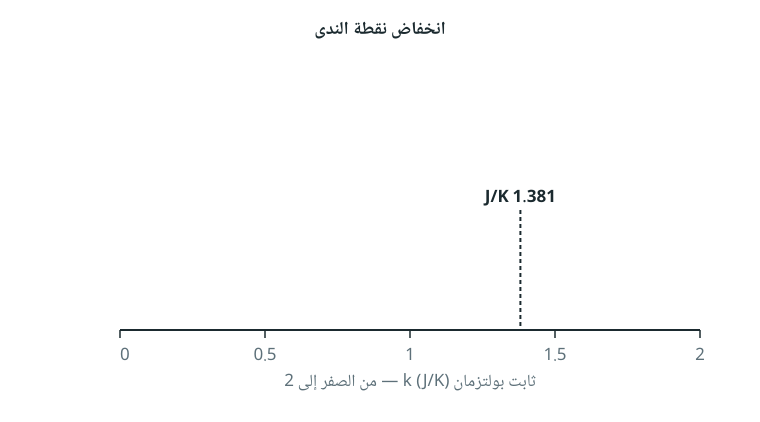

انخفاض نقطة الندى
Dew point depression
انخفاض نقطة الندى هو الفرق بين درجة حرارة الهواء ودرجة الندى عنده. يقيس قرب الهواء من التشبع، فكلما صغر الفرق اقترب التكاثف.
انخفاض نقطة الندى هو الفرق بين درجة حرارة الهواء الجافة ودرجة الندى، أي الدرجة التي يبدأ عندها بخار الماء في الهواء بالتكاثف عند الضغط والرطوبة المطلقة نفسيهما. وهو مقياس مباشر لقرب الهواء من التشبع: إذا كان الانخفاض كبيراً فالهواء جاف وبعيد عن التكاثف، وإذا صغر اقترب التكاثف. ويختلف عن الرطوبة النسبية في أنه فرق درجات حرارة لا نسبة، فيُقرأ مباشرة على مقياس حرارة. ويُستعمل في الأرصاد الجوية للتنبؤ بالضباب والندى، وفي التكييف لتحديد خطر التكاثف على الأسطح الباردة، وفي التجفيف لتحديد قدرة الهواء على سحب الرطوبة. مثال: هواء عند 30 °م ودرجة ندى 12 °م انخفاضه 18 K، وهو هواء جاف نسبياً؛ ولو كانت درجة الندى 27 °م لكان الانخفاض 3 K فقط، وهو هواء قريب من التشبع.
كيف تعمل الظاهرة؟
بخار الماء في الهواء يولّد ضغطاً جزئياً يعتمد على كمية البخار ودرجة الحرارة. وضغط التشبع يزيد بزيادة درجة الحرارة زيادة أسّية. فحين يُبرَّد الهواء عند رطوبة مطلقة ثابتة، ينخفض ضغط التشبع حتى يتساوى مع الضغط الجزئي، وعندها تصل الرطوبة النسبية إلى 100% وتبدأ قطرات الماء بالتشكل. وتلك الدرجة هي درجة الندى. وانخفاض نقطة الندى هو المسافة الحرارية المتبقية قبل بلوغ هذه النقطة. ولهذا فسطح بارد تحت درجة الندى يتكاثف عليه الماء، وهو أساس ظاهرة الندى على الأعشاب والضباب وتكاثف الماء على النظارات الباردة.
العلاقة بالأرقام
T_d تُحسب من p_v: عند p_v معروف تُبحث درجة الحرارة التي عندها p_sat = p_v. والانخفاض = T − T_d بوحدة K. والرطوبة النسبية φ = p_v/p_sat(T). مثال: عند 30 °م p_sat = 4.246 kPa؛ فإذا كانت φ = 40% فp_v = 1.698 kPa، ودرجة الندى هي الدرجة التي عندها p_sat = 1.698 kPa، وهي نحو 14.8 °م، فالانخفاض نحو 15.2 K. وإذا كانت φ = 90% فp_v = 3.821 kPa، ودرجة الندى نحو 28.2 °م، والانخفاض 1.8 K.
مفاهيم متقاربة
الانخفاض فرق درجات حرارة، والرطوبة النسبية نسبة؛ ولا يُستبدل أحدهما بالآخر. ودرجة الندى قيمة مطلقة، والانخفاض فرق. والانخفاض ليس الفرق الرطب–الجاف: الأخير يعتمد على التبريد التبخيري والتهوية. وليس انخفاض نقطة التجمد: الأخير يخص المحاليل. والانخفاض لا يقيس كمية الماء في الهواء مباشرة، بل يقيس هامش التبريد قبل التكاثف؛ فرطوبة مطلقة عالية عند درجة حرارة عالية قد تعطي انخفاضاً كبيراً.
حدود التطبيق
الانخفاض لا يُستعمل وحده لوصف رطوبة الهواء بلا درجة الحرارة، لأن الرطوبة المطلقة تعتمد على الاثنين. وفي درجات تحت الصفر يُستعمل انخفاض نقطة الصقيع بدل نقطة الندى، لأن البخار يتصعّد مباشرة. وفي الهواء الملوث بأبخرة أخرى لا يبقى الحساب ثنائي المكوّن صالحاً. ولا تُعمَّم قيمة انخفاض مقيسة في موضع على مساحة كبيرة، لأن الرطوبة تتفاوت. والانخفاض لا يتنبأ بكمية التكاثف بل ببدايته.

| الكمية | القيمة | المصدر |
|---|---|---|
| ضغط البخار المشبع للماء عند 100 °م | 0.101 42 MPa | [2] |
المصادر
- 1 The International System of Units (SI), 9th edition (2019) — BIPM — Bureau International des Poids et Mesures (2019). www.bipm.org/en/publications/si-brochure · اطُّلع عليه 2026-11-21
- 2 NISTIR 5078: Thermodynamic Properties of Water — Tabulation from the IAPWS Formulation 1995 — NIST — National Institute of Standards and Technology (1998). nvlpubs.nist.gov/nistpubs/Legacy/IR/nistir5078.pdf · اطُّلع عليه 2026-11-21
- 3 CODATA Value: molar gas constant — NIST — CODATA 2022 recommended values (2024). physics.nist.gov/cgi-bin/cuu/Value?r · اطُّلع عليه 2026-11-21
استشهد بهذا المصطلح
الصيغتان مبنيتان من بيانات الصفحة نفسها: العنوان والتاريخ ورابط النسخة المنشورة.
انخفاض نقطة الندى — Dew point depression. (2026). ديوان المعرفة — انفراد. https://infiradev.com/diwan/terms/term-dew-point-depression.html
@misc{term-dew-point-depression2026,
title = {انخفاض نقطة الندى},
titleaddon = {Dew point depression},
howpublished = {{ديوان المعرفة — انفراد} — مرجع علمي عربي},
year = {2026},
url = {https://infiradev.com/diwan/terms/term-dew-point-depression.html},
urldate = {2026-11-26},
note = {مراجعة علمية: hermes (مراجعة معتمدة 2026-11-26)}
}
راجعه: hermes (مراجعة معتمدة 2026-11-26) · 2026-11-26 · آخر تحديث 2026-11-21